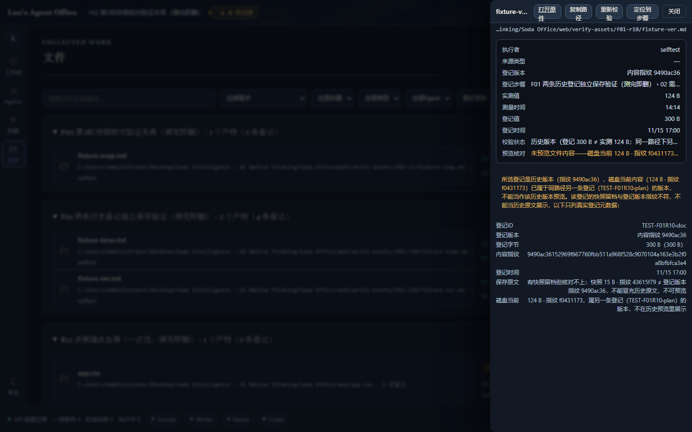
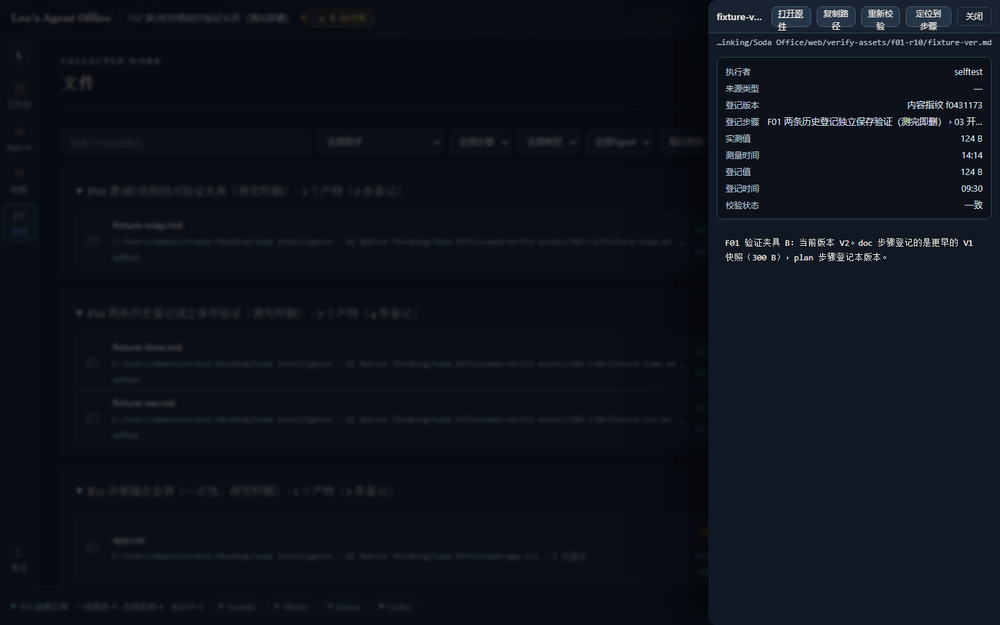

f02r2-verify.mjs，Edge CDP 1440×900 实测 + curl/API 地面真值），本轮三处修改全部闭环。| # | 文件 | 位置 | 修改 |
|---|---|---|---|
| 1 | web/app.css | .fv-hint 规则（~1828 行） | 补上任务规格缺的内边距 padding: 12px（第 1 轮只有 margin: 0 0 12px，没有 padding） |
| 2 | web/app.js | fvHistPreview()（~2188 行） | 历史原文候选从「仅 f.text」扩为 f.text ＋最近一条 f.history[].snapshot 快照；候选须与登记版本指纹核对一致（sha256 优先、登记字节退判）才作为 hist-saved 展示；快照失配 → 明示「有快照留档但核对不上…不可预览」并把快照的字节/指纹写进元数据行；await 后复核 seq 防串屏 |
| 3 | web/app.js | renderFvDetail() pvText（~2314 行） | hist-saved 分支文案改为「已展示按登记指纹核对一致的历史原文（登记保存原文或历史快照留档）」，与新增的快照来源口径一致 |
版本选择绑定链路（第 1 轮已建，本轮沿用未改）：.lf-reg 行带 data-reg-vkey（版本指纹）＋data-task-id＋data-step-key（登记ID）→ 点击委托优先取行身份 → resolveFileReg 按 vkey 定位登记 → fvVersionGate＋diskMatchesOtherReg 判历史分支。备份：web/app.js.bak-f02r2、web/app.css.bak-f02r2；node --check web/app.js 通过。
/api/office/flow + /api/office/file，9/9 通过）| 对象 | 字节 | SHA-256（前 8 位） | 说明 |
|---|---|---|---|
| TEST-F01R10›doc 登记（历史版） | 300 B | 9490ac36 | 夹具未动 |
| TEST-F01R10›plan 登记（当前版） | 124 B | f0431173 | =磁盘现状 |
| 磁盘 fixture-ver.md | 124 B | f0431173 | API 实回全文 sha256 |
| 磁盘 fixture-time.md | 133 B | d4ada83b | 同版本双登记 |
F01R10 doc 的 history[0].snapshot=V1 旧版快照 | 15 B | 43615f79 | 与登记指纹 9490ac36 不符 → 不可用态是该登记唯一诚实答案 |
| TEST-F02R2›doc 登记（临时夹具，测完已删） | 153 B | 73ed854b | history[0].snapshot 与登记指纹一致（Node 独立重算核对） |
| TEST-F02R2›plan 登记 = 磁盘 fixture-snap.md | 145 B | 1a7caeb2 | 当前版本 |
TEST-F01R10›doc · sha:9490ac36…（登记ID＋指纹双绑定，含 lf-hist 类、定位入口 goto=TEST-F01R10|doc）data-fv-hint="hist"，无 <pre>；正文不含 124 B 文件的「当前版本 V2」字样（不冒充磁盘内容），也不含失配快照标签「旧版快照」（不冒充快照）TEST-F01R10›doc、登记字节行=300 B（300 B）<pre>：124 B、sha256=f0431173896513c5…=所选登记指纹，正文为 V2 当前内容TEST-F01R10|plan；match 分支不添加「预览核对」行（保持原样）data-fv-hint="hist-saved"，<pre> 页内实测 153 B / sha256=73ed854bb7046512…，与登记指纹逐字节一致，正文含「历史原文 V1」、不含磁盘 V2 标记「磁盘现状」fvHint=hist、无 pre、无 V2/旧快照字样；cur 态 5 次全部 124 B / f0431173Page.reload(ignoreCache) 5 次，每次刷新后 TEST-F01R10 组：物理文件行=2、登记行=4、组头「· 2 个产物（4 条登记）」.lf-cur 当前版本行 color = rgb(101,217,177)=#65D9B1
.lf-hist 历史版本行 color = rgb(175,192,213)=#AFC0D5
页面 JS 异常 0 条


其余证据：f02r2-verify.mjs（脚本）、f02r2-verify.out（完整 69 条 PASS 输出）。
nover）的历史路径走不了指纹核对，只能落元数据分支——现有夹具没有这种情况，未实测。web/verify-assets/f02-r2/）已按「测完即删」清理，删除后复测 /api/office/flow：TEST-F02R2 已消失、TEST-F01R10 完好且登记仍 4 条。